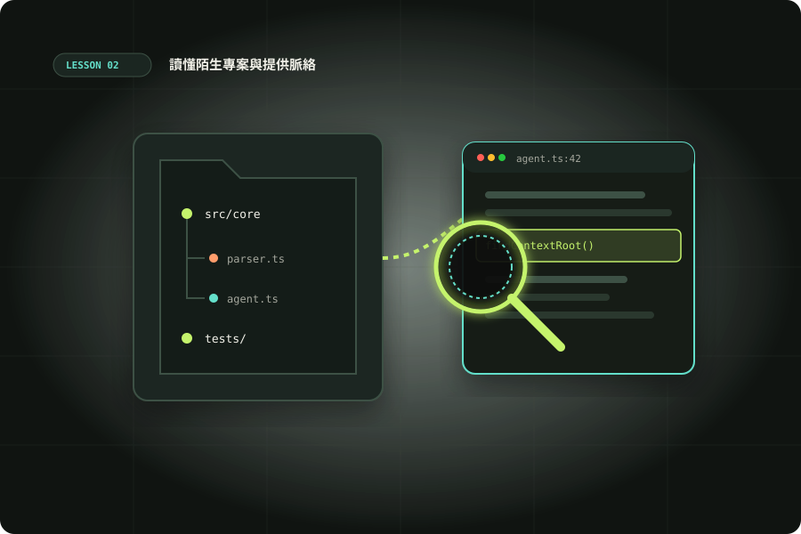

UNIT 02 · 120 MINUTES
讀懂陌生專案與提供脈絡
學習目標：不要求 Codex「讀完整個 repo」；能用一連串有目的的小問題找出功能入口、資料流、依賴和測試位置，再形成精確的下一步任務。

單元 02 核心圖解：讀懂陌生專案與提供脈絡素材庫 ↗
120 分鐘安排
10 分repo 快速觀察
20 分讀碼策略
25 分由入口追資料流
35 分情境導覽練習
20 分證據與摘要
10 分驗收回顧
學習計時00:00:00
METHOD / THREE PASSES
三輪導覽：由廣到窄
Pass 1 · 地圖
讀 README、目錄結構、套件設定、啟動與測試命令。只建立地圖，暫不深入細節。
Pass 2 · 路徑
選一個使用者可見流程，追入口 → 核心邏輯 → 資料來源 / 輸出 → 測試。
Pass 3 · 假設
問清楚不確定處，列出證據和檔案位置，再開始變更。
Context budget（上下文預算）：一次只問一段流程，請 Codex 引用路徑和行號；摘要中保留可用於下一任務的事實，不要把所有探索逐字搬進新 prompt。
APP / CLI CONTROLS
同名指令，先確認操作入口
下表的 slash commands 輸入在各自的 Codex 對話框。CLI 指的是終端機裡的互動 Codex，並非 shell。請先輸入斜線查看目前版本的選單。
| 控制 | Codex App | Codex 互動 CLI |
|---|---|---|
| /plan | 支援時切換規劃模式 | 切換規劃模式 |
| /status | 查看目前對話／context／可用限制資訊 | 查看模型、權限、工作根目錄與 session 狀態 |
| /review | 從 App 審查變更；依選單選範圍 | 啟動 code review，選未提交變更或比較基準 |
| /usage | 開啟 usage／billing 介面 | 帳號用量操作與 token 活動；需支援的 Codex 帳號登入 |
| /permissions | 使用 App 提供的權限設定；不把 CLI 命令當成 App 保證 | 查看／切換權限 profile |
| /init | 選單支援時建立 AGENTS.md 初稿 | 建立 AGENTS.md 初稿 |
終端機命令：先進入 repo 再執行
codex；codex resume 接續先前 session；codex --help 查 CLI 功能。這些命令不輸入在 App 對話框。網頁 Chat／Work 以自然語言交辦，不能直接套用這份 CLI 命令表。SCENARIO / CASE STUDY
案例：每週報表漏掉部分訂單
你剛加入一個服務，客服說「每週報表少算週日晚上建立的訂單」。你還不知道是排程、時區、查詢還是匯出造成。
先做唯讀探索，不先修。- 確認專案如何啟動、測試與產生報表。
- 定位報表入口、資料查詢、日期區間計算和匯出模組。
- 追出時間的來源與時區轉換點；列出相關測試。
- 要求 Codex 把「已確認」和「推測」分開，並提供檔案/行號。
- 用一個具體時間例子重現，例如台北週日晚間對應的 UTC 日期。
PROMPT WORKBENCH
先畫系統地圖的 Prompt
適合剛打開 repo，先了解可執行範圍。
GUIDED PRACTICE / 35 MIN
實作：接手一個陌生 repo
- 選一個你不熟悉但能執行的 repo，從 README 與目錄開始。
- 用全域地圖 prompt，檢查啟動和測試命令是否真能用。
- 選一條功能路徑追查；例如登入、搜尋、匯入或報表。
- 要求 Codex 找相關測試，指出目前覆蓋哪些案例、缺哪些邊界。
- 把你要接手的下一個任務寫成 3 句摘要，附檔案清單與未確認事項。
圖片與錯誤脈絡如何提供
若任務與介面、架構圖或錯誤畫面有關，附圖能減少口頭描述的落差。圖片旁仍要說明觀察重點、視窗尺寸、重現方式和預期行為。涉及敏感資料先遮蔽再附上。
不要只說「看截圖修好」。說出哪裡不符、怎麼觸發、在什麼環境出現，以及哪些元素不能改。
RECAP / TRANSFER
知識檢查
探索 repo 時，什麼證據最適合支持 Codex 對「啟動命令」的結論？